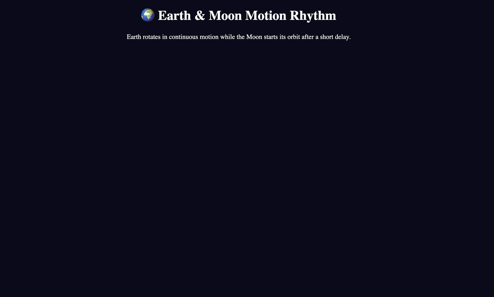
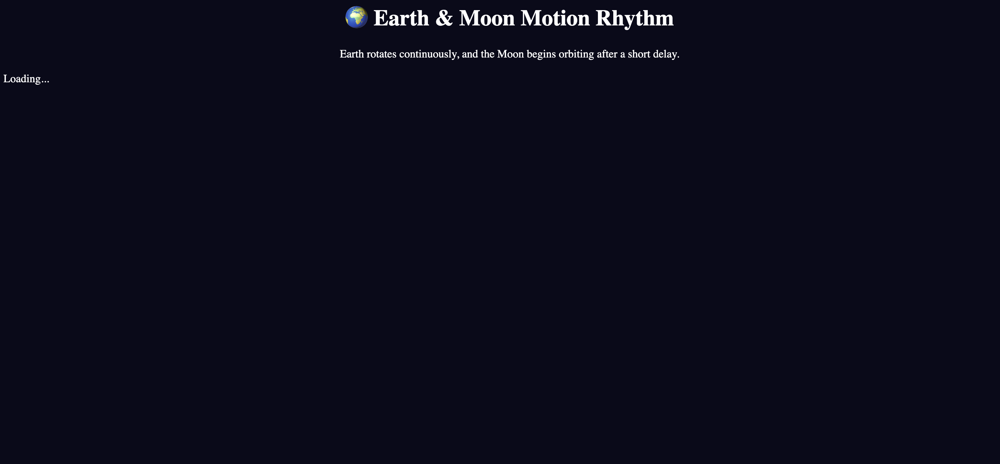
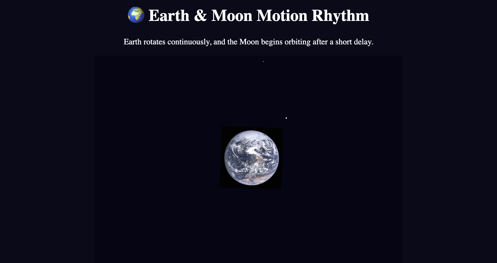
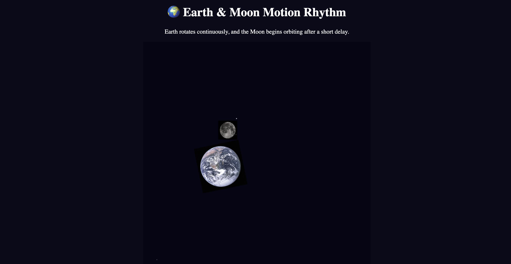
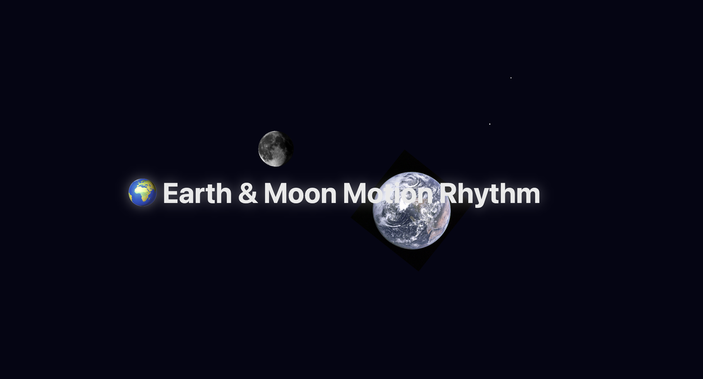

🌍 Earth & Moon Motion Rhythm

Step 1 — Built the base layout and overall scene setup.

Step 2 — Inserted the Earth image (encountered an import error).

Step 3 — Added the Earth successfully and implemented a twinkling star background.

Step 4 — Introduced the Moon image to orbit the Earth.

Step 5 — Removed the Moon’s black background and adjusted its motion speed.

Step 6 — Refined the title placement and finalized the composition.